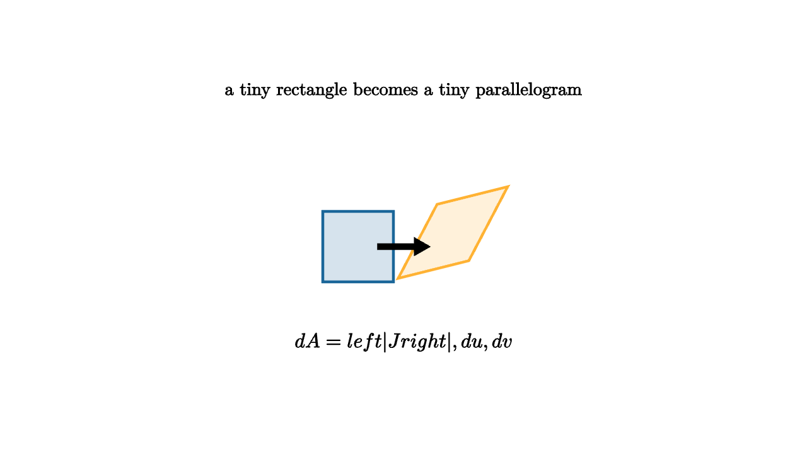

Jacobians Are Local Volume Exchange Rates
Coordinates are a choice of labeling. Rectangular coordinates label a point by horizontal and vertical moves. Polar coordinates label the same point by radius and angle. A change of variables lets you solve a problem in coordinates that fit the shape, but area does not always keep the same price under the new labels.
The Jacobian is the local exchange rate between coordinate area and physical area.
Suppose
The Jacobian determinant is
Its absolute value tells how much a tiny $du\,dv$ rectangle stretches into area in the $xy$ plane.

source
let soft = |col, amount| lerp(WHITE, col, amount)
let map_point = |p| [p[0] + 0.55 * p[1], 0.25 * p[0] + 1.05 * p[1], 0]
mesh square = fill{soft(BLUE, 0.18)} stroke{BLUE, 2.5} Polygon([0.8l + 0.55d, 0.1l + 0.55d, 0.1l + 0.15u, 0.8l + 0.15u])
mesh image = point_map{map_point} fill{soft(ORANGE, 0.18)} stroke{ORANGE, 2.5} Polygon([0.25r + 0.55d, 0.95r + 0.55d, 0.95r + 0.15u, 0.25r + 0.15u])
mesh diagram = [
square,
image,
stroke{BLACK, 2} Arrow(0.25l + 0.2d, 0.25r + 0.2d),
center{1.35u} Text("a tiny rectangle becomes a tiny parallelogram", 0.64),
center{1.15d} Tex("dA=\\left|J\\right|\\,du\\,dv", 0.72)
]The determinant appears for the same reason it appeared in linear algebra. Near a point, a smooth coordinate change looks like its best linear approximation. The two coordinate directions in the $uv$ plane map to the tangent vectors
Those two vectors span a tiny parallelogram. The determinant gives its signed area.
For polar coordinates,
The Jacobian matrix is
so the determinant is
That is why
The factor $r$ is geometric. A small angle step sweeps a longer arc when the radius is larger. The same $d\theta$ buys more physical distance farther from the origin.
source
let soft = |col, amount| lerp(WHITE, col, amount)
let map_point = |p| [p[0] + 0.55 * p[1], 0.25 * p[0] + 1.05 * p[1], 0]
let angle = 0.55
let polar_a0 = [0.85, 0, 0]
let polar_a1 = [0.85 * cos(angle), 0.85 * sin(angle), 0]
let polar_b1 = [1.45 * cos(angle), 1.45 * sin(angle), 0]
let polar_b0 = [1.45, 0, 0]
let polar_ray = [1.8 * cos(angle), 1.8 * sin(angle), 0]
"Coordinate Cell"
mesh grid = stroke{soft(LIGHT_GRAY, 0.05), 1.2} LineGrid([-1.6, 1.6, 8], [-0.9, 0.9, 5], 1)
mesh cell = fill{soft(BLUE, 0.18)} stroke{BLUE, 2.6} Polygon([0.5l + 0.3d, 0.1r + 0.3d, 0.1r + 0.25u, 0.5l + 0.25u])
mesh scene = [
grid,
cell,
center{1.35u} Text("start in coordinate space", 0.68)
]
play Fade(0.7)
"Local Map"
grid = point_map{map_point} grid
cell = point_map{map_point} fill{soft(ORANGE, 0.2)} stroke{ORANGE, 2.6} Polygon([0.5l + 0.3d, 0.1r + 0.3d, 0.1r + 0.25u, 0.5l + 0.25u])
scene = [
grid,
cell,
center{1.35u} Text("the Jacobian prices local area", 0.66)
]
play Trans(1.0)
"Polar"
scene = [
stroke{soft(LIGHT_GRAY, 0.08), 1.2} Circle(0.6),
stroke{soft(LIGHT_GRAY, 0.08), 1.2} Circle(1.1),
stroke{soft(LIGHT_GRAY, 0.08), 1.2} Circle(1.6),
stroke{BLUE, 2.4} Line(0r, 1.8r),
stroke{BLUE, 2.4} Line(0r, polar_ray),
fill{soft(ORANGE, 0.18)} stroke{ORANGE, 2.4} Polygon([polar_a0, polar_a1, polar_b1, polar_b0]),
center{1.35u} Text("polar area grows with radius", 0.66),
center{1.15d} Tex("dA=r\\,dr\\,d\\theta", 0.72)
]
play Trans(1.0)The change-of-variables formula follows:
The absolute value appears because physical area is positive. The sign of the determinant still matters for orientation, especially in boundary integrals and transformations that flip handedness.
This lesson is also a warning about coordinate shortcuts. Rewriting the integrand is only half the job. The area element must be rewritten too. If a disk becomes a rectangle in $(r,\theta)$ coordinates, the missing $r$ factor would treat every angular strip as equally wide, which compresses the outer part of the disk and overvalues the center.
Local linear maps
The Jacobian matrix is the derivative of a multivariable map. For a one-variable function, the derivative is a local slope. For a map from the plane to the plane, the derivative is a local linear transformation. It tells how tiny input arrows change.
At a point $(u_0,v_0)$, small changes satisfy
The two columns of the matrix are the images of the coordinate basis directions. The determinant measures the signed area of the parallelogram spanned by those columns. That is why the determinant belongs in an integral.
Common coordinate systems
Cylindrical coordinates in three dimensions use
The volume element is
The extra $z$ coordinate does not change the circular area scaling in the horizontal plane.
Spherical coordinates add another geometric factor. With radius $\rho$, polar angle $\phi$, and azimuth $\theta$, the volume element is
The $\rho^2$ appears because shells grow like surface area, and $\sin\phi$ appears because latitude circles shrink near the poles. These factors are not decorations. They are the local volume exchange rates of the coordinate labels.
Orientation and absolute value
The determinant sign tells whether the coordinate change preserves or reverses orientation. A map that swaps two coordinates has determinant $-1$, meaning it flips handedness while preserving area. In an ordinary area or volume integral, we use the absolute value because physical size is positive.
In oriented integrals, the sign may matter. Boundary orientation, winding number, and surface orientation all care about whether the coordinate map flips the local frame. The Jacobian is therefore doing two jobs: its magnitude measures scaling, and its sign records orientation.
Jacobians are local because curved coordinate grids bend. Over a tiny cell, the bending is negligible and the map behaves like a linear transformation. Add those local exchange rates over the whole coordinate region, and the integral keeps honest account of area or volume.